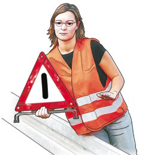
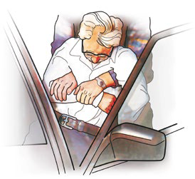
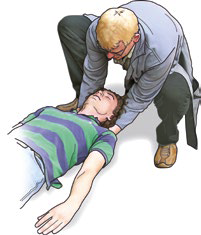
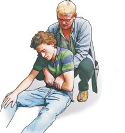
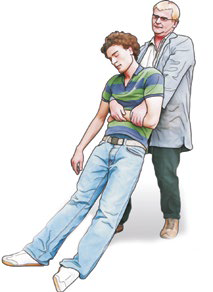
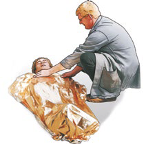
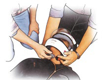
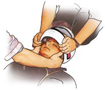
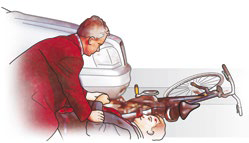
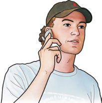

Richtiges Verhalten bei Notfällen
Menschen in Not brauchen Hilfe. Dies ist nicht allein eine Frage der Moral, sondern auch gesetzlich festgelegt. Wir sind bei einem Notfall oder einem Unglück verpflichtet zu helfen – im Rahmen unserer gegebenen Möglichkeiten.
Das erste Kapitel erläutert die wichtigsten Rettungs- und Verhaltensmaßnahmen bei einem Unfall.
Es führt in die Erstmaßnahmen ein, die für alle möglichen Situationen gelten. Wichtig ist dabei oft die schnelle und richtige Alarmierung des Rettungsdienstes. Erste Hilfe besteht auch in Zuwendung, Einfühlungsvermögen, Verständnis und Zuspruch.
Verhalten bei Unfällen
Neben der eigenen Sicherheit, auf die Sie immer zuerst achten müssen, kommt es an einer Unfallstelle darauf an, gezielt und umsichtig vorzugehen.
So helfen Sie richtig
 1. Die Unfallstelle sichern
1. Die Unfallstelle sichern
Im Interesse der Sicherheit aller Beteiligten müssen Sie die Unfallstelle (im Straßenverkehr, in Betrieben, auf Baustellen, auf einer Skipiste usw.) immer zuerst sichern. Tragen Sie und andere Helfende an Unfallstellen im öffentlichen Raum zur eigenen Sicherheit eine Warnweste.


Zum Absichern im Straßenverkehr verwenden Sie ein Warndreieck, welches Sie innerorts in ca. 50 m und außerorts in ca. 100 m Entfernung aufstellen.In Betrieben und auf Baustellen kann auch mit "Absperrband" o. ä. gesichert werden.
 2. Rettung bei akuter Gefahr
2. Rettung bei akuter Gefahr
Bei manchen Unfallsituationen ist es notwendig, die Verunglückten unter Beachtung der eigenen Sicherheit aus einer akuten Gefahrensituation zu retten (Rettungsgriff).
 3. Notruf und Erste Hilfe
3. Notruf und Erste Hilfe
Da Sie an einer Unfallstelle meist nicht alleine sind, bitten Sie andere Beteiligte um Mithilfe. Ein Notruf muss erfolgen und die Verletzten benötigen Erste Hilfe (Notruf).
Versuchen Sie ruhig zu bleiben. Verschaffen Sie sich zunächst einen Überblick über die vorgefundene Situation.
Handeln Sie nicht »kopflos«. Rufen Sie laut um Hilfe, dadurch machen Sie auf die Notfallsituation aufmerksam. Meist sind Sie an einer Unglücksstelle nicht allein, Umstehende sind bestimmt bereit mitzuhelfen. Sprechen Sie diese direkt an und bitten Sie um deren Mithilfe. Es ist immer wichtig, dass jemand die Initiative ergreift.
Wenn Sie sich einer Unfallstelle nähern, warnen Sie die nachfolgenden Fahrzeuge durch Einschalten der Warnblinkanlage. Wenn möglich halten Sie sich bei Verkehrsunfällen hinter der Leitplanke auf. Tragen Sie eine Warnweste und sichern Sie zunächst die Unfallstelle mit einem Warndreieck ab.
Befinden sich mehrere Helfende am Unfallort, sorgen Sie für eine Aufgabenteilung.
Bei Unfällen im Betrieb bitten Sie Kolleginnen oder Kollegen, die Unfallstelle zu sichern und den Betroffenen vor Neugierigen abzuschirmen. Verwenden Sie zur Sicherung Absperrband und Warnschilder.
Brennende Personen können Sie bespielsweise mit einem Feuerlöscher löschen. Richten Sie den Löscher jedoch auf keinen Fall auf das Gesicht der betroffenen Person.
Da sich Brände meist relativ langsam entwickeln, kann der frühzeitige und gezielte Einsatz eines Feuerlöschers oder anderer Löschmittel einen zunächst meist kleinen Brand schnell löschen und Menschen retten. Hierzu ist es unerlässlich, dass man in Betrieben, auf Baustellen, aber auch z. B. im Hotel über die Fluchtwege, die vorhandenen Feuerlöscheinrichtungen und deren Funktion informiert ist.
Rettung aus Kraftfahrzeugen
So helfen Sie richtig
 Ist eine Unfallstelle abgesichert, helfen Sie der verunglückten Person aus ihrem Fahrzeug oder von der Straße. Bringen Sie die Verunglückten in sichere Entfernung von der Unfallstelle weg.
Ist eine Unfallstelle abgesichert, helfen Sie der verunglückten Person aus ihrem Fahrzeug oder von der Straße. Bringen Sie die Verunglückten in sichere Entfernung von der Unfallstelle weg.


Verunglückte, die nicht aussteigen können, müssen Sie aus dem Fahrzeug retten, insbesondere dann, wenn z. B. akute Brandgefahr besteht oder wenn der bzw. die Betroffene bewusstlos ist, muss die Rettung aus dem Fahrzeug erfolgen. Sprechen Sie die verunglückte Person an, sagen Sie ihr, was Sie beabsichtigen.
Sprechen Sie die verunglückte Person an, sagen Sie ihr, was Sie beabsichtigen.
 Lösen Sie den Sicherheitsgurt. Wenn er sich nicht öffnen lässt, müssen Sie den Gurt durchtrennen.
Lösen Sie den Sicherheitsgurt. Wenn er sich nicht öffnen lässt, müssen Sie den Gurt durchtrennen.
 Achten Sie darauf, dass die Füße nicht eingeklemmt sind.
Achten Sie darauf, dass die Füße nicht eingeklemmt sind.
 Fassen Sie die verletzte Person wie abgebildet und ziehen Sie sie vorsichtig aus dem Fahrzeug.
Fassen Sie die verletzte Person wie abgebildet und ziehen Sie sie vorsichtig aus dem Fahrzeug.
Dabei ist es von Vorteil, wenn eine zweite Person unterstützend die Beine des Verunglückten hält.
 Legen Sie die betroffene Person in sicherer Entfernung von der Unglücksstelle vorsichtig ab und helfen Sie situationsgerecht.
Legen Sie die betroffene Person in sicherer Entfernung von der Unglücksstelle vorsichtig ab und helfen Sie situationsgerecht.
Wenn keine Lebensgefahr besteht und Betroffene nicht aussteigen möchten, können sie bis zum Eintreffen des Rettungsdienstes im Fahrzeug verbleiben. Betreuung und Erste-Hilfe-Maßnahmen erfolgen dann am bzw. im Fahrzeug.
Rettung aus einem Gefahrenbereich
Nach der Sicherung der Unfallstelle leisten Sie der betroffenen Person Erste Hilfe. Bei akuter Gefahr müssen Sie dazu die betroffene Person zunächst aus der Gefahrenzone retten. Erwachsene können im Rettungsgriff aus dem Gefahrenbereich gerettet werden.
So helfen Sie richtig

Abb. 1
 Sprechen Sie die betroffene Person an, informieren Sie sie über die beabsichtigte Maßnahme.
Sprechen Sie die betroffene Person an, informieren Sie sie über die beabsichtigte Maßnahme.
 Fassen Sie am Boden Liegende von hinten kommend unter Nacken und Schultern, und bringen Sie sie zum Sitzen.
Fassen Sie am Boden Liegende von hinten kommend unter Nacken und Schultern, und bringen Sie sie zum Sitzen.
Achten Sie darauf, dass Sie den Kopf mit Ihren Unterarmen stützen und Betroffene nicht seitlich wegsacken (1).

Abb. 2
 Jetzt treten Sie dicht hinter die betroffene Person und unterfahren mit beiden Armen die Achselhöhlen. Legen Sie einen Unterarm des oder der Betroffenen quer vor den Brustkorb. Dann fassen Sie diesen Arm mit beiden Händen von oben. Dabei den Unterarm nicht umfassen, sondern mit allen Fingern (auch den Daumen) "überhaken" (Abb. 2).
Jetzt treten Sie dicht hinter die betroffene Person und unterfahren mit beiden Armen die Achselhöhlen. Legen Sie einen Unterarm des oder der Betroffenen quer vor den Brustkorb. Dann fassen Sie diesen Arm mit beiden Händen von oben. Dabei den Unterarm nicht umfassen, sondern mit allen Fingern (auch den Daumen) "überhaken" (Abb. 2).

Abb. 3
 Strecken Sie die Beine und ziehen Sie die betroffene Person dicht am eigenen Körper auf Ihre Oberschenkel (3).
So ziehen Sie sie an einen sicheren Ort und legen sie dort möglichst auf einer Decke vorsichtig ab.
Strecken Sie die Beine und ziehen Sie die betroffene Person dicht am eigenen Körper auf Ihre Oberschenkel (3).
So ziehen Sie sie an einen sicheren Ort und legen sie dort möglichst auf einer Decke vorsichtig ab.

Abb. 4
 Danach sprechen Sie die betroffene Person erneut an. Decken Sie sie z. B. mit einer Rettungsdecke zu. Silberne Seite grundsätzlich zur betroffenen Person. Betreuen Sie sie, bis der Rettungsdienst eintrifft (4).
Danach sprechen Sie die betroffene Person erneut an. Decken Sie sie z. B. mit einer Rettungsdecke zu. Silberne Seite grundsätzlich zur betroffenen Person. Betreuen Sie sie, bis der Rettungsdienst eintrifft (4).
Kinder werden zur Rettung aus einer Gefahrenzone einfach auf den Arm genommen.
Helmabnahme
Sind verunglückte Motorradfahrer oder Motorradfahrerinnen ohne Bewusstsein, muss ihnen wegen akuter Erstickungsgefahr der Helm vorsichtig abgenommen werden.
So helfen Sie richtig


Ein Helfer oder eine Helferin kniet oberhalb des Kopfes und hält zunächst den Helm und den Kopf der verunglückten Person stabil. Der zweite Helfer oder die zweite Helferin öffnet das Visier und den Kinnriemen, ggf. muss die Brille entfernt werden.
Der zweite Helfer oder die zweite Helferin öffnet das Visier und den Kinnriemen, ggf. muss die Brille entfernt werden.


Greifen Sie mit beiden Händen seitlich an den Kopf der betroffenen Person. Dabei stabilisieren Sie mit den Daumen vor und den restlichen Fingern hinter dem Ohr den Kopf. Jetzt kann der Helm vorsichtig nach oben abgezogen werden.
Jetzt kann der Helm vorsichtig nach oben abgezogen werden.
 Nachdem der Helm entfernt wurde, kontrollieren Sie die Atmung (siehe hier).
Nachdem der Helm entfernt wurde, kontrollieren Sie die Atmung (siehe hier).
 Atmet die betroffene Person, bringen Sie sie in die Seitenlage (siehe hier), dabei stabilisiert ein Helfer oder eine Helferin den Kopf.
Atmet die betroffene Person, bringen Sie sie in die Seitenlage (siehe hier), dabei stabilisiert ein Helfer oder eine Helferin den Kopf.
 Decken Sie die verletzte Person zu (z. B. mit der Rettungsdecke aus dem Kfz-Verbandkasten)
Decken Sie die verletzte Person zu (z. B. mit der Rettungsdecke aus dem Kfz-Verbandkasten)
 Kontrollieren Sie ständig ihre Lebenszeichen.
Kontrollieren Sie ständig ihre Lebenszeichen.
Notfalls kann der Helm auch von einer Person allein abgenommen werden.
Wenn Sie alleine an der Unfallstelle sind, gehen Sie wie folgt vor: Knien Sie oberhalb des Kopfes und ziehen Sie nach dem Öffnen des Visiers und des Kinnriemens vorsichtig den Helm nach oben ab. Achten Sie darauf, dass der Kopf der verunglückten Person nicht aufschlägt. Kontrollieren Sie anschließend die Lebenszeichen und gehen Sie wie oben beschrieben weiter vor.
Erste Maßnahmen bei ansprechbaren Betroffenen
Die erste Kontaktaufnahme
So helfen Sie richtig

 Begeben Sie sich auf die Höhe der betroffenen Person.
Begeben Sie sich auf die Höhe der betroffenen Person.
Häufig stehen mehrere Beteiligte um die betroffene Person herum, dies ist für Betroffene sehr unangenehm, insbesondere wenn sich eine Person von oben über sie beugt. Knien oder hocken Sie sich deshalb hin, wenn Betroffene auf dem Boden liegen. Treten Sie nicht von hinten an Betroffene heran, sondern möglichst immer von vorn mit Blickkontakt.
 Schauen Sie Betroffene an.
Schauen Sie Betroffene an.
Sie erhalten dadurch einen Gesamtüberblick über den Zustand der betroffenen Person. Sie können erkennen, ob die Person aufgeregt ist, ob sie friert, ob sie Schmerzen hat oder sichtbare Verletzungen vorliegen.
Nennen Sie Ihren Namen.
 Durch diesen ersten Kontakt vermitteln Sie der betroffenen Person, wahrgenommen zu werden – dies schafft Vertrauen. Fragen Sie nach ihrem oder seinem Namen. Damit bekunden Sie Respekt und Anteilnahme.
Durch diesen ersten Kontakt vermitteln Sie der betroffenen Person, wahrgenommen zu werden – dies schafft Vertrauen. Fragen Sie nach ihrem oder seinem Namen. Damit bekunden Sie Respekt und Anteilnahme.
Fragen Sie die betroffene Person, was passiert ist und ob sie Schmerzen hat.
Sie erhalten hierdurch wichtige Informationen über das Unfallgeschehen bzw. die Krankengeschichte. Krankheitsbild und Verletzungen können so erkannt werden. Befindlichkeiten und Ängste werden erkennbar.
 Stellen Sie vorsichtig Körperkontakt her.
Stellen Sie vorsichtig Körperkontakt her.
Halten Sie die Hand der betroffenen Person oder legen Sie Ihre Hand auf ihre Schulter. Auch das Abwischen der Stirn wird von Betroffenen meist positiv aufgenommen.
 Sagen Sie den Betroffenen immer, was Sie tun.
Sagen Sie den Betroffenen immer, was Sie tun.
Stimmen Sie jedes weitere Vorgehen mit den Betroffenen ab. Sagen Sie ihnen immer, was Sie vorhaben und fragen Sie, ob sie oder er einverstanden ist und ggf. mithelfen kann. Sagen Sie auch, was schon getan wurde, dass z. B. der Rettungsdienst bereits informiert ist. Seien Sie behilflich, wenn Betroffene Kontakt zu einem/r vertrauten Arzt oder Ärztin oder zu Angehörigen aufnehmen wollen.
 Bitten Sie Umstehende um Mithilfe.
Bitten Sie Umstehende um Mithilfe.
Meist sind Sie an einer Unglücksstelle nicht allein. Sprechen Sie andere Personen direkt an und bitten Sie um deren Mithilfe. Es ist wichtig, dass jemand die Initiative ergreift und die Erste Hilfe koordiniert, bis der Rettungsdienst eintrifft.
Bei allen Notfällen ist die frühzeitige Alarmierung des Rettungsdienstes von entscheidender Bedeutung.
Die bundes-/europaweit einheitliche Notrufnummer ist die 112. Der Notruf ist in der Regel auch von gesperrten (fremden) Mobiltelefonen absetzbar.
So helfen Sie richtig
 Der Notruf soll folgende Informationen enthalten:
Der Notruf soll folgende Informationen enthalten:

Wo ist der Notfall?
Machen Sie zuerst möglichst genaue Angaben über den Notfallort: Ort, Straße, Hausnummer, Fabrikgebäude, Zufahrtswege, Stockwerk usw. Legen Sie danach bitte nicht auf!- Warten Sie auf Fragen der Rettungsleitstelle! Meist sind für den Einsatz des Rettungsdienstes und der Feuerwehr weitere Informationen von Bedeutung, wonach Sie gefragt werden. Zum Beispiel:
- Was ist genau geschehen?
- Um wie viele Verletzte/Erkrankte geht es?
- Welche Verletzungen/Erkrankungen haben die Betroffenen und besteht Lebensgefahr?
- Nutzen Sie die Lautsprecherfunktion Ihres Telefons. So haben Sie die Hände für Erste-Hilfe-Maßnahmen frei und können gleichzeitig mit der Rettungsleitstelle sprechen.
 Den Rettungsdienst einweisen
Den Rettungsdienst einweisen
Bei schwierigen örtlichen Gegebenheiten, z. B. bei unübersichtlicher Straßenführung, bei mehrstöckigen Häusern, bei einem großen Werksgelände o. Ä., sollte immer eine Person den Rettungsdienst auf der Straße bzw. der Firmenzufahrt empfangen, um ihn einzuweisen.
Hinweis: Die Polizei hat die Notrufnummer 110
Der Notruf 110 alarmiert die Polizei, der Notruf wird – wenn notwendig – an den Rettungsdienst weitergegeben. Der Notruf 112 geht direkt zur zuständigen Rettungsleitstelle.
Bei einem Notruf (112) vom Handy ist eine besonders genaue Ortsangabe zu machen.
Mit der bundesweit verfügbaren App "Nora" können Sie einen Notruf mit Standortbestimmung auch per Smartphone absetzen.
An Autobahnen und an manchen Bundesstraßen befinden sich Notrufsäulen, über die der Rettungsdienst alarmiert werden kann.
Bei Vergiftungen rufen Sie, nachdem Sie den Rettungsdienst alarmiert haben, eine Informationszentrale für Vergiftungen z. B. im Bereich Berlin/Brandenburg unter 030/19240 an, hier erhalten Sie fachlichen Rat.
Eine Ersthelferin oder ein Ersthelfer hat mit der Kostenabwicklung eines Unfalls im Zusammenhang mit Erste-Hilfe-Leistungen nichts zu tun. Das gilt auch dann, wenn in guter Absicht Rettungsmittel angefordert werden und sich später herausstellt, dass sie nicht benötigt werden.
Jede Ersthelferin oder jeder Ersthelfer ist automatisch gesetzlich unfallversichert. Sachschäden oder Auslagen werden in der Regel durch die Versicherungen der verursachenden Unfallbeteiligten ersetzt.
Selbst wenn in der Aufregung einmal eine Erste-Hilfe-Anwendung nicht richtig gelingt, kann ein helfender Laie dafür nicht strafrechtlich belangt werden, außer er handelt grob fahrlässig oder er fügt vorsätzlich jemandem Schaden zu.
Strafbar macht sich aber, wer gar nicht hilft (unterlassene Hilfeleistung) oder als "Gaffer" an der Unfallstelle die Hilfeleistungen behindert.
Kfz-Verbandkästen und Verbandkästen im Betrieb/auf der Baustelle müssen vollständig befüllt sein und das Verfalldatum darf nicht überschritten sein.